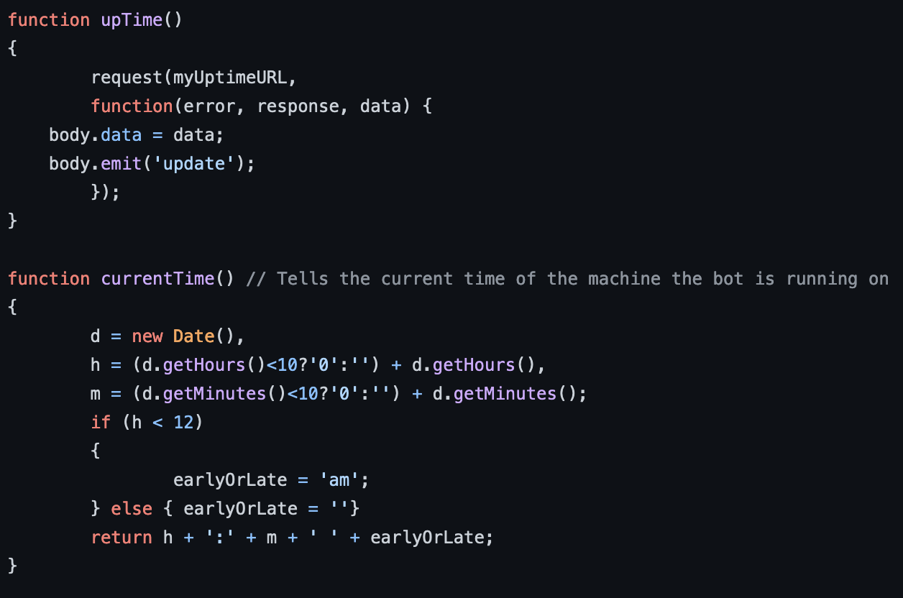

Looking for more interactive and functional programming I looked into coding a chat bot I could test in real time on my machine and which could be used for sincere purposes as well as entertainment.
This was my first interactive code featuring functions I wrote - and have since forgotten and rediscovered. There is something wholesome about seeing one's old code.